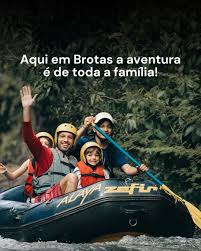
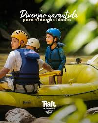
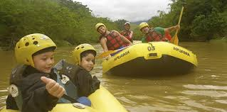
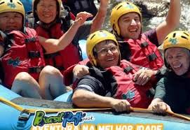
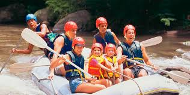
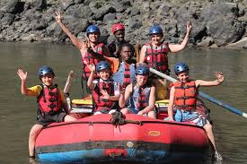
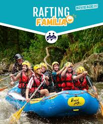
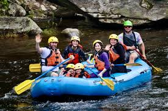
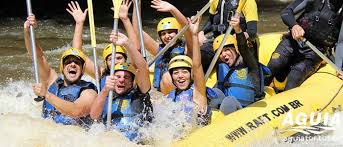

Roteiros de aventura

1. Brotas (SP) Considerada a capital brasileira do turismo de aventura. O rafting acontece no Rio Jacaré Pepira. Corredeiras de classes I a V, atendendo iniciantes e experientes. Há até opções de rafting noturno.

2. Extrema (MG) Rafting no Rio Jaguari. Corredeiras mais intensas (classes IV e V). Ideal para quem busca bastante adrenalina.

3. Foz do Iguaçu (PR) Experiência próxima ao famoso parque das cataratas. Percursos mais tranquilos e acessíveis para iniciantes. Excelente estrutura turística.

4. Ibirama (SC) Rafting no Rio Itajaí-Açu. Possui opções para diferentes níveis de experiência. Cercada por belas paisagens do Vale do Itajaí.

5. Itacaré (BA) A atividade ocorre em Taboquinhas, distrito de Itacaré. Corredeiras de classes II a IV. Combina aventura com o clima paradisíaco do litoral baiano.

6. Juquitiba (SP) Um dos destinos mais próximos da capital paulista. Percursos no Rio Juquiá. Muito procurado para passeios de fim de semana.

7. Socorro (SP) Rafting realizado no Rio do Peixe. Ótima infraestrutura turística. Ideal tanto para famílias quanto para aventureiros.

8. Chapada dos Veadeiros (GO) Percursos em rios cercados pelo cerrado preservado. Combina rafting com cachoeiras e trilhas. Excelente opção para ecoturismo.

9. Três Coroas (RS) O rafting acontece no Rio Paranhana. Possui trajetos para iniciantes e praticantes experientes. É um dos principais destinos de aventura do Sul do Brasil.
Informações dos Passeios
| Destino | Rio | Nível | Duração | Indicado para |
|---|---|---|---|---|
| Brotas (SP) | Jacaré Pepira | Classes I a V | 2 horas | Todos os públicos |
| Extrema (MG) | Jaguari | Classes IV e V | 2h30 | Amantes de adrenalina |
| Foz do Iguaçu (PR) | Iguaçu | Classe II | 2 horas | Iniciantes |
| Ibirama (SC) | Itajaí-Açu | Classes II a IV | 2 horas | Famílias e grupos |
| Itacaré (BA) | Taboquinhas | Classes II a IV | 2h30 | Ecoturistas |
| Juquitiba (SP) | Juquiá | Classes II e III | 2 horas | Passeios de fim de semana |
| Socorro (SP) | Rio do Peixe | Classes II e III | 2 horas | Famílias |
| Chapada dos Veadeiros (GO) | Rios da região | Classes III e IV | 3 horas | Ecoturismo |
| Três Coroas (RS) | Paranhana | Classes II a IV | 2 horas | Iniciantes e experientes |